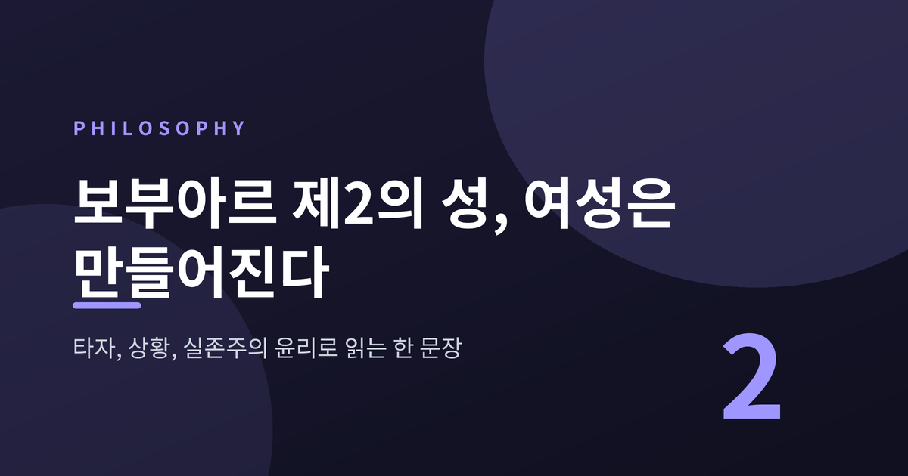
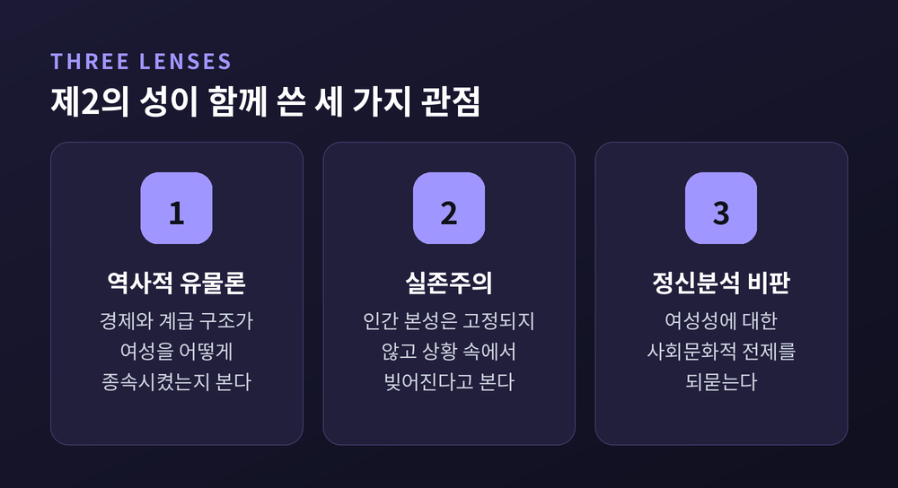
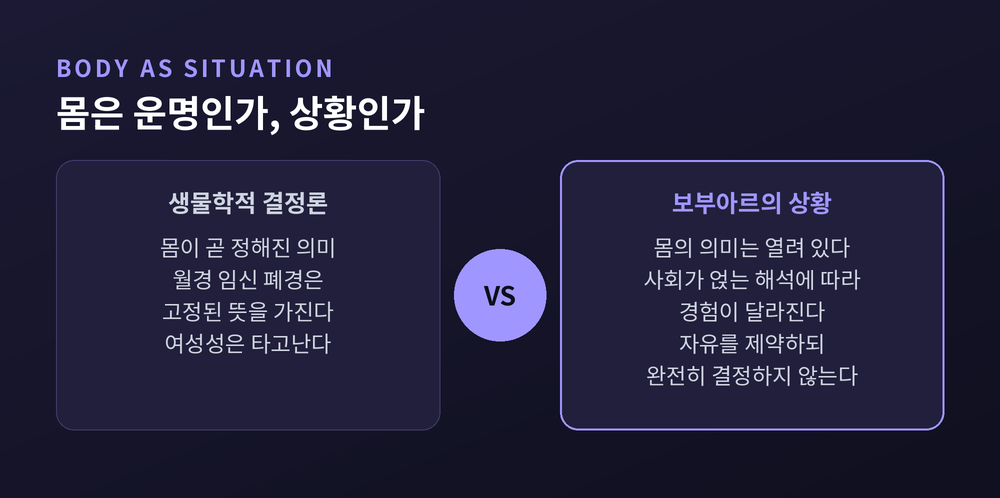
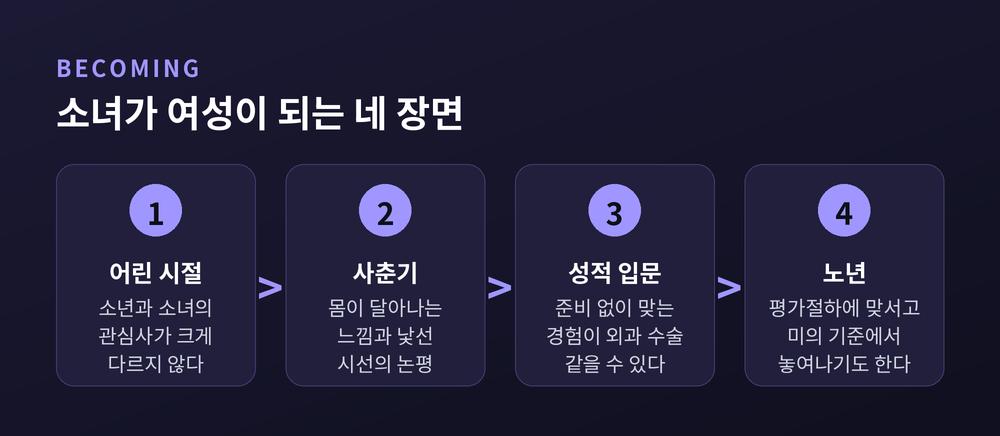
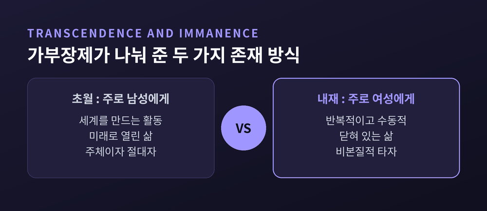
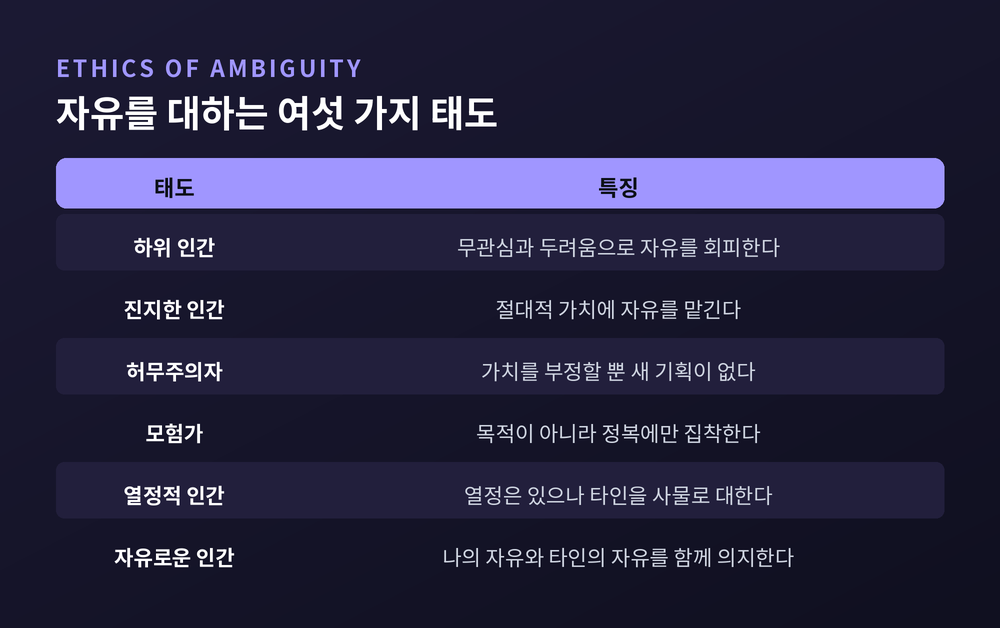

오늘은 시몬 드 보부아르의 『제2의 성』과 그 유명한 문장을 정리해 보려 합니다.
결론부터 말씀드리면, 이 문장은 여성성을 타고난 본성이 아니라 사회가 주는 의미와 한 사람의 선택이 맞물려 빚어지는 과정으로 본다는 선언입니다.
타자, 상황, 실존주의 윤리라는 세 개의 열쇠로 차근차근 읽어 보겠습니다.
『제2의 성』은 1949년 프랑스에서 『Le Deuxième Sexe』라는 이름으로 두 권으로 출간되었습니다.
1권은 「사실과 신화」, 2권은 「체험」입니다. 갈리마르에서 나왔고, 집필에는 약 14개월이 걸렸다고 전해집니다.
출간 첫 주에 약 2만 2천 부가 팔렸습니다.
당시는 프랑스 여성이 참정권을 얻은 지 5년이 채 되지 않은 때였습니다.
법 앞의 평등이 막 열렸을 뿐, 삶의 현장은 달라지지 않았던 시기입니다.
반응은 뜨거웠고 거칠었습니다. 처음에는 '스캔들적 성공'이라 불렸고, 바티칸은 이 책을 금서 목록에 올렸습니다. 금서 제도 자체가 폐지된 1966년까지 그 목록에 남아 있었습니다.
보부아르의 회고에 따르면 카뮈도 화를 냈다고 합니다.
이 책은 세 가지 관점을 함께 씁니다. 역사적 유물론, 실존주의, 그리고 정신분석에 대한 문제 제기입니다.
하나의 이론으로 여성을 설명하지 않고, 여러 도구로 같은 질문을 두드립니다. 그 질문은 단순합니다. "여성이란 무엇인가."

원문은 "On ne naît pas femme: on le devient."입니다. 영어로는 "One is not born, but rather becomes, a woman."으로 옮겨집니다.
흔히 '여성은 사회가 찍어낸 틀'이라는 뜻으로 요약되지만, 보부아르의 의도는 그보다 섬세합니다.
핵심은 생물학이 곧 운명이라는 생각을 거부하는 것입니다.
몸이 없다는 말이 아닙니다. 몸이 가진 의미가 고정되어 있지 않다는 말입니다.
월경, 임신, 폐경 같은 생물학적 사실은 그 자체로 정해진 뜻을 갖지 않습니다. 사회가 어떤 의미를 얹는지에 따라 전혀 다르게 경험됩니다.
그래서 보부아르는 몸을 '운명'이 아닌 '상황'으로 봅니다.
예전엔 몸이 곧 설명이었습니다. 지금은 몸이 해석의 출발점입니다.
이 대비가 이 문장의 무게입니다.

그렇다면 '만든다'는 주체는 누구일까요.
스탠퍼드 철학 백과사전은 여성이 사회적 조건 안에서 자기 몸을 능동적으로 떠맡으며 '여성적 존재'가 된다고 설명합니다.
교육과 시선이 빚어내는 면도 있고, 그 안에서 스스로 받아들이는 면도 있다는 뜻입니다.
수동적으로 찍히는 것도, 마음대로 고르는 것도 아닙니다.
한 가지는 짚어 둘 만합니다.
이 문장이 '성(sex)과 젠더(gender)의 구분'의 출발점으로 읽히는 것은 사실입니다. 다만 보부아르가 그 구분을 끝까지 밀고 갔는지를 두고는 학자들 사이에 논쟁이 있습니다.
번역에서도 해석이 갈립니다. '여성이 된다'로 읽을지, 젠더 정체성을 획득한다는 의미로 읽을지에 대한 논의가 이어지고 있습니다.
보부아르는 추상에 머물지 않고 삶의 장면을 따라갑니다.
『필로소피 나우』에 실린 해설을 따라가면 이렇습니다.
어린 시절에는 소년과 소녀의 관심사가 크게 다르지 않습니다.
균열은 사춘기에 옵니다. 소녀는 자기 몸이 자신에게서 달아나는 듯한 느낌을 받습니다. 낯선 사람들의 시선과 논평이 따라붙으면서, 원하지 않는 자의식이 생깁니다.
성적 입문은 충분한 준비 없이 찾아오고, 보부아르는 그것이 '외과 수술'처럼 느껴질 수 있다고 적습니다.
노년에는 사회의 평가절하와 맞서야 하지만, 어떤 여성은 미의 기준에서 놓여나는 자유를 얻기도 합니다.
여기서 눈여겨볼 것은 시선입니다.
몸은 변하지만, 그 변화를 괴로움으로 만드는 것은 몸을 바라보는 눈입니다.
그래서 해법도 몸이 아니라 '공간'에서 찾습니다. 여성이 자기 몸을 남성의 눈이 아닌 자기 자신의 눈으로 바라볼 수 있는 자유로운 공간이 필요하다는 것입니다.

이 책의 가장 유명한 문장 중 하나는 이것입니다. "그는 주체이고, 절대자이며, 그녀는 타자다."
남성이 인간의 기본값이 되고, 여성은 남성과의 관계 속에서만 규정된다는 진단입니다.
보부아르는 헤겔의 주인과 노예 변증법을 끌어옵니다. 그러나 그대로 쓰지는 않습니다.
억압받는 집단은 대개 공통의 역사와 연대를 갖습니다. 여성은 남성들 사이에 흩어져 살기 때문에 그런 집단적 반란이 어렵다는 것입니다.
스탠퍼드 철학 백과사전은 이를 '비본질적 타자'라는 말로 풀이합니다. 억압당하면서도 억압의 뿌리를 알아차리기 어려운 자리라는 뜻입니다.
타자의 자리는 초월과 내재라는 한 쌍의 개념으로 구체화됩니다.
초월은 세계를 만들고 미래를 향해 열려 있는 활동입니다. 내재는 반복적이고 수동적이며 닫힌 존재 방식입니다.
가부장제는 초월을 남성에게, 내재를 여성에게 배정해 왔다는 것이 보부아르의 분석입니다.
해방은 한쪽을 버리는 일이 아닙니다. 여성이 초월과 내재를 모두 자기 것으로 떠맡는 일이라고 정리됩니다.

상황이라는 개념도 여기서 빛을 냅니다.
상황은 몸을 포함해 한 사람을 둘러싼 구체적 환경의 총체입니다. 자유를 크게 제약하지만, 완전히 결정하지는 않습니다.
인터넷 철학 백과사전은 어떤 상황이 행동을 거의 불가능하게 만드는 억제 요인이며, 억압받는 이는 자기 처지가 본성 때문이라고 믿도록 '신비화'된다고 설명합니다.
'원래 그런 것'이라는 말이 가장 강한 감옥이라는 이야기입니다.
『제2의 성』을 이해하려면 2년 앞선 『모호성의 윤리』(1947)를 함께 읽어야 합니다.
이 책에서 인간은 자유로운 주체이면서 동시에 신체적 한계, 사회적 장벽, 타인의 권력이라는 사실성에 묶인 모호한 존재입니다.
신의 용서가 없으니 행위에 대한 책임은 온전히 우리의 몫입니다.
보부아르는 자유를 대하는 태도를 여섯 단계로 나눕니다.
삶을 회피하는 하위 인간, 절대적 가치에 자유를 맡기는 진지한 인간, 모든 가치를 부정하는 허무주의자, 정복 자체에만 집착하는 모험가, 열정은 있으나 타인을 사물로 대하는 열정적 인간, 그리고 진정으로 자유로운 인간입니다.

마지막 단계의 문장이 윤리의 핵심입니다.
"스스로 자유롭기를 의지하는 것은 타인도 자유롭기를 의지하는 것이다."
이 문장은 『제2의 성』에서 방향이 분명해집니다. 여성의 자유는 남성에 맞서는 개인의 쟁취가 아니라, 모든 사람이 자유를 누릴 조건을 만드는 문제가 됩니다.
백과사전의 설명에 따르면 그 조건에는 건강, 안전, 여가, 검열 없는 담론 같은 물질적 기반이 포함됩니다.
또 자유를 부정하는 전략인 자기기만은, 어른의 불안을 피해 의존적인 아이로 머무르려는 유혹으로 설명됩니다.
저는 이것이 타자의 자리를 편안하게 받아들이는 일과 닿아 있다고 읽습니다. 다만 이는 제 해석이며, 인용한 자료가 직접 그렇게 말한 것은 아닙니다.
사르트르와의 차이도 여기서 드러납니다. 보부아르는 개인의 자유를 곧바로 다른 자유로운 주체에 대한 윤리적 의무와 연결했고, 억압 구조의 분석을 앞세웠다고 평가됩니다.
이 책이 완벽하다고 할 수는 없습니다.
스탠퍼드 철학 백과사전은 보부아르가 백인 부르주아 여성의 경험에서 일반화했고, 인종적 예속보다 가부장적 억압을 우선했다는 비판을 소개합니다.
전기 작가 데어드르 베어는 일부 서술에서 '무의식적 여성혐오'를 지적했다고 전해집니다.
번역의 문제도 있습니다.
1953년 영어 초역은 철학 용어의 오역과 대량 생략으로 비판을 받았고, 2009년과 2010년에 완역본이 나왔습니다. 영어 초역의 연도는 자료마다 1951년과 1953년으로 갈려, 이 글에서는 두 곳이 일치하는 1953년을 따랐습니다.
우리가 읽는 문장이 번역을 거친 문장이라는 점은 기억해 둘 만합니다.
'여성은 만들어진다'는 말은 여성이 가짜라는 뜻이 아닙니다.
의미는 사회가 얹고, 그 위에서 한 사람이 자기 존재를 떠맡는다는 뜻입니다.
타자라는 자리는 자연이 아닌 상황이 만들었고, 상황은 자유를 제약하되 지우지는 못합니다. 그래서 윤리가 필요해집니다.
결국 남는 것은 하나입니다.
— 나의 자유는 타인의 자유와 떼어 놓고 생각할 수 없다.
이 책이 70년이 넘도록 읽히는 이유는, 그 질문이 아직 끝나지 않았기 때문일 것입니다.
오늘 우리가 '원래 그런 것'이라고 믿고 있는 것은 무엇인지, 한 번쯤 되물어 보시길 권합니다.